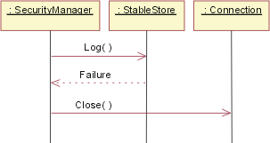

| Concept: Test-first Design |
 |
|
| Related Elements |
|---|
IntroductionTest designs are created using information from a variety of artifacts, including design artifacts such as use case realizations, design models, or classifier interfaces. Tests are executed after components are created. It's typical to create the test designs just before the tests are to be executed - well after the software design artifacts are created. Figure 1, following, shows an example. Here, test design begins sometime toward the end of implementation. It draws on the results of component design. The arrow from Implementation to Test Execution indicates that the tests can't be executed until the implementation is complete.
Fig1: Traditionally, Test Design is performed later in the life-cycle However, it doesn't have to be this way. Although test execution has to wait until the component has been implemented, test design can be done earlier. It could be done just after the design artifact is completed. It could even be done in parallel with component design, as shown here:
Fig2: Test-first Design brings test design chronologically in-line with software design Moving the test effort "upstream" in this way is commonly called "test-first design". What are its advantages?
ExamplesHere are some examples to give you the flavor of test-first design. Suppose you're creating a system to replace the old "ask the secretary" method of assigning meeting rooms. One of the methods of the MeetingDatabase class is called getMeeting, which has this signature: Meeting getMeeting(Person, Time); Given a person and a time, getMeeting returns the meeting that person is scheduled to be in at that time. If the person isn't scheduled for anything, it returns the special Meeting object unscheduled. There are some straightforward test cases:
These test cases are unexciting, but they need to be tried eventually. They might as well be created now, by writing the actual test code that will someday be run. Java code for the first test might look like this:
// if not in a meeting at given time,
// expect to be unscheduled.
public void testWhenAvailable() {
Person fred = new Person("fred");
Time now = Time.now();
MeetingDatabase db = new MeetingDatabase();
expect(db.getMeeting(fred, now) == Meeting.unscheduled);
}
But there are more interesting test ideas. For example, this method searches for a match. Whenever a method searches, it's a good idea to ask what should happen if the search finds more than one match. In this case, that means asking "Can a person be in two meetings at once?" Seems impossible, but asking the secretary about that case might reveal something surprising. It turns out that some executives are quite often scheduled into two meetings at once. Their role is to pop into a meeting, "rally the troops" for some short amount of time, and then move on. A system that didn't accommodate that behavior would go at least partially unused. This is an example of test-first design done at the implementation level catching an analysis problem. There are a few things to note about that:
The second of the three examples is a statechart model for a heating system.
Fig3: HVAC Statechart A set of tests would traverse all the arcs in the statechart. One test might begin with an idle system, inject a Too Hot event, fail the system during the Cooling/Running state, clear the failure, inject another Too Hot event, then run the system back to the Idle state. Since that does not exercise all the arcs, more tests are needed. These kinds of tests look for various kinds of implementation problems. For example, by traversing every arc, they check whether the implementation has left one out. By using sequences of events that have failure paths followed by paths that should successfully complete, they check whether error-handling code fails to clean up partial results that might affect later computation. (For more about testing statecharts, see Guideline: Test Ideas for Statechart and Activity Diagrams.) The final example uses part of a design model. There's an association between a creditor and an invoice, where any given creditor can have more than one invoice outstanding.
Fig4: Association between Creditor and Invoice Classes Tests based on this model would exercise the system when a creditor has no invoices, one invoice, and a large number of invoices. A tester would also ask whether there are situations in which an invoice might need to be associated with more than one creditor, or where an invoice has no creditor. (Perhaps the people who currently run the paper-based system the computer system is to replace use creditor-less invoices as a way to keep track of pending work). If so, that would be another problem that should have been caught in Analysis. Who does test-first design?Test-first design can be done by either the author of the design or by someone else. It's common for the author to do it. The advantage is that it reduces communication overhead. The Designer and Test Designer don't have to explain things to each other. Further, a separate Test Designer would have to spend time learning the design well, whereas the original Designer already knows it. Finally, many of these questions - like "what happens if the compressor fails in state X?" - are natural questions to ask during both software artifact design and test design, so you might as well have the same person ask them exactly once and write the answers down in the form of tests. There are disadvantages, though. The first is that the Designer is, to some extent, blind to his or her own mistakes. The test design process will reveal some of that blindness, but probably not as much as a different person would find. How much of a problem this is seems to vary widely from person to person and is often related to the amount of experience the Designer has. Another disadvantage of having the same person do both software design and test design is that there's no parallelism. Whereas allocating the roles to separate people will take more total effort, it will probably result in less elapsed calendar time. If people are itching to move out of design and into implementation, taking time for test design can be frustrating. More importantly, there's a tendency to skimp on the work in order to move on. Can all test design be done at component design time?No. The reason is that not all decisions are made at design time. Decisions made during implementation won't be well-tested by tests created from the design. The classic example of this is a routine to sort arrays. There are many different sorting algorithms with different tradeoffs. Quicksort is usually faster than an insertion sort on large arrays, but often slower on small arrays. So a sorting algorithm might be implemented to use Quicksort for arrays with more than 15 elements, but insertion sort otherwise. That division of labor might be invisible from design artifacts. You could represent it in a design artifact, but the Designer might have decided that the benefit of making such explicit decisions wasn't worthwhile. Since the size of the array plays no role in the design, the test design might inadvertently use only small arrays, meaning that none of the Quicksort code would be tested at all. As another example, consider this fraction of a sequence diagram. It shows a SecurityManager calling the log() method of StableStore. In this case, though, the log() returns a failure, which causes SecurityManager to call Connection.close().  Fig5: SecurityManager sequence diagram instance This is a good reminder to the Implementer. Whenever log() fails, the connection must be closed. The question for testing to answer is whether the Implementer really did it-and did it correctly-in all cases or just in some. To answer the question, the Test Designer must find all the calls to StableStore.log() and make sure each of those call points is given a failure to handle. It might seem odd to run such a test, given that you've just looked at all the code that calls StableStore.log(). Can't you just check to see if it handles failure correctly? Perhaps inspection might be enough. But error-handling code is notoriously error-prone because it often implicitly depends on assumptions that the existence of the error has violated. The classic example of this is code that handles allocation failures. Here's an example:
This code attempts to recover from out of memory errors by cleaning up (thus making memory available) and then continuing to process events. Let's suppose that's an acceptable design. emergencyRestart takes great care not to allocate memory. The problem is that emergencyRestart calls some utility routine, which calls some other utility routine, which calls some other utility routine-which allocates a new object. Except that there's no memory, so the whole program fails. These kinds of problems are hard to find through inspection. Test-first design and the phases of Unified ProcessUp to this point, we've implicitly assumed that you'd do as much test design as possible as early as possible. That is, you'd derive all the tests you could from the design artifact, later adding only tests based on implementation internals. That may not be appropriate in the Elaboration phase, because such complete testing may not be aligned with an iteration's objectives. Suppose an architectural prototype is being built to demonstrate product feasibility to investors. It might be based on a few key use-case instances. Code should be tested to see that it supports them. But is there any harm if further tests are created? For example, it might be obvious that the prototype ignores important error cases. Why not document the need for that error handling by writing test cases that will exercise it? But what if the prototype does its job and reveals that the architectural approach won't work? Then the architecture will be thrown away - along with all those tests for error-handling. In that case, the effort of designing the tests will have yielded no value. It would have been better to have waited, and only designed those tests needed to check whether this proof-of-concept prototype really proves the concept. This may seem a minor point, but there are strong psychological effects in play. The Elaboration phase is about addressing major risks. The whole project team should be focused on those risks. Having people concentrating on minor issues drains focus and energy from the team. So where might test-first design be used successfully in the Elaboration phase? It can play an important role in adequately exploring architectural risks. Considering how, precisely, the team will know if a risk has been realized or avoided will add clarity to the design process and may well result in a better architecture being built the first time. During the Construction phase, design artifacts are put into their final form. All the required use-case realizations are implemented, as are the interfaces for all classes. Because the phase objective is completeness, complete test-first design is appropriate. Later events should invalidate few, if any, tests. The Inception and Transition phases typically have less focus on design activities for which testing is appropriate. When it is, test-first design is applicable. For example, it could be used with candidate proof-of-concept work in Inception. As with Construction and Elaboration phase testing, it should be aligned with iteration objectives. |


| Copyright (c) 2002, 2006 IBM Corporation and Object Mentor. All rights reserved. This program and the accompanying materials are made available under the terms of the Eclipse Public License v1.0 which accompanies this distribution, and is available at http://www.eclipse.org/legal/epl-v10.html. Contributors: IBM Corporation and Object Mentor - initial implementation |